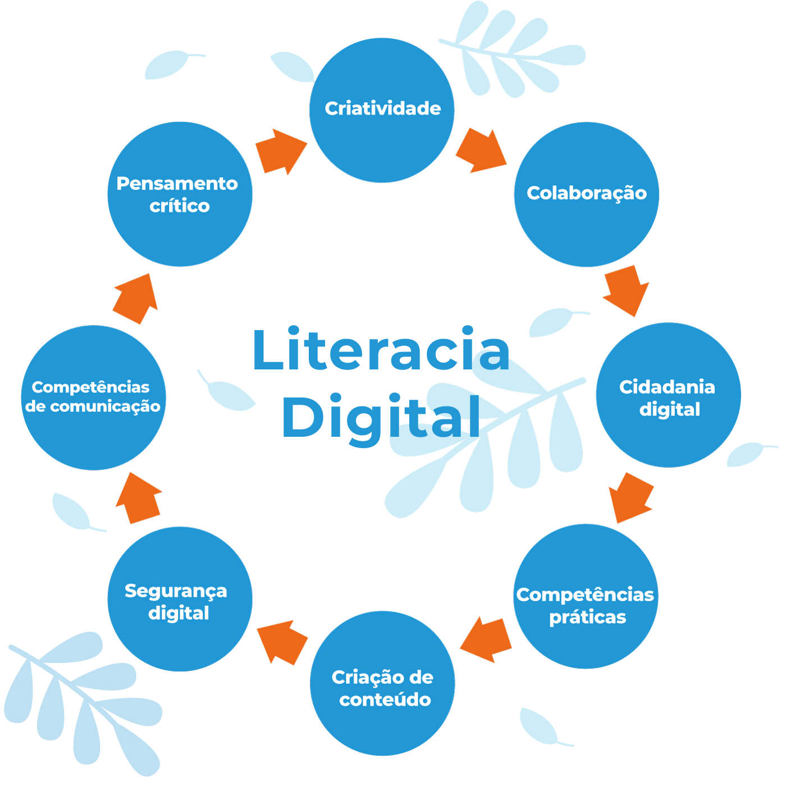

Módulo 4 | Aula 3 A Literacia Digital em Saúde como Competência para promover Saúde na APS
A Literacia Digital e a Literacia Digital em Saúde
Você já foi apresentado a alguns conceitos de literacia, mas você já ouviu falar em Literacia Digital? Com a tecnologia cada vez mais presente em nossas rotinas, a internet é uma grande fonte de informação e não seria diferente na área da saúde.
Com o advento da Internet e a maior possibilidade de acesso a uma grande quantidade de informações sobre saúde, os usuários dos serviços de saúde tornaram-se mais informados, conquistando “habilidades e conhecimentos necessários para desempenhar um papel ativo no processo de decisão que envolve sua saúde e a gestão de suas condições de vida” (GARBIN; PEREIRA NETO; GUILAM, 2008). Uma vez informados, tornaram-se o que passou a ser chamado de ePatients ou “pacientes digitais” (FERGUSON, 2002).
Um ePatient, quando diante de uma preocupação médica, primeiro tenta gerenciá-la por conta própria, consultando websites, amigos e familiares para obter informações e conselhos. Isso pode ser muito perigoso!
Se precisar de ajuda, uma opção é a busca por sites de orientação médica reconhecidos pelas sociedades de especialidades, redes do Ministério da Saúde ou atendimento por profissionais da saúde on-line. Pode ser que procure por um atendimento presencial apenas quando nenhum dos recursos acima atender às suas expectativas.
O surgimento desse novo tipo de usuário dos serviços de saúde – mais propensos a questionar as opiniões dos profissionais de saúde - demanda certa mudança nas atitudes desses profissionais, os quais passam a ter que lidar também com as informações trazidas pelos usuários, sejam elas adequadas ou não.
Na era digital, não basta que esse profissional passe a informação correta e adequada de forma clara. É importante dar às pessoas o controle sobre suas próprias informações de saúde, exercendo um cuidado centrado na pessoa – o que se aproxima do que aconselham documentos importantes do campo da Promoção da Saúde como a Carta de Ottawa (1986).
É importante que o profissional de saúde possa se integrar a outros setores e atores sociais como as escolas, a família, o poder público e a mídia, os quais estão prese
Assim, para ser um promotor da LS, o profissional de saúde deve, segundo Freitas et al. (2019) apud Hibbard & Gilburt (2014):
O profissional de saúde deve:
- Ter uma linguagem acessível, assertiva, clara e positiva
- Ter um grande envolvimento
- Ter uma relação terapêutica
- Ter controle sobre a mensagem
- Disponibilizar de informações simples, confiável e fidedigna
- Afirmar-se como o pólo comunicativo dinâmico. Ser uma fonte.
Fonte: Freitas et al. (2019) apud Hibbard & Gilburt (2014)
A concepção de Literacia Digital para Alves (2014) é abrangente e genérica, pois implica em saber mais do que ler e escrever, uma vez que corresponde à capacidade de compreensão e utilização da informação recebida pelas várias fontes digitais. Oliveira (2017) considera que para a Literacia Digital, o sujeito será capaz de receber a informação, selecioná-la e utilizá-la em seu cotidiano.
O entendimento e a dimensão da Literacia Digital para a vida das pessoas, de um modo geral, podem ser evidenciados sob várias perspectivas. Pode-se identificar o acesso às mais diversas formas digitais, como é realizado pelo celular, por exemplo. Por outro lado, Pedro (2018) diz que para além da informação facilmente acessível e de dispositivos de gestão da informação, seriam necessários “mediadores”, especialmente quando o nível de Literacia Digital for considerado baixo.
Entretanto, é necessário identificar alguns aspectos significativos da Literacia Digital. Segundo Pinheiro (2019), são estes aspectos que sustentam e compõem a base da Literacia Digital, assim representados a seguir:

Considerando esses aspectos, é possível perceber a amplitude da Literacia Digital e como todos estão relacionados entre si e o quanto são necessários para compreender o que é, e o que alcança a Literacia Digital, pois possibilita ao sujeito transpor o “simples” acesso a informações e atualizações sobre os assuntos de seu interesse, mas desenvolver habilidades e competências que visam contribuir para o conhecimento.
A Literacia Digital é a capacidade de compreensão e utilização da informação advinda das diversas fontes digitais existentes e associada a todas as dimensões da vida humana.
- Coloque-se na posição de interlocutor nas relações com os usuários;
- Exercite a escuta, dê espaço para que o usuário exponha suas angústias, medos e dúvidas sem receio de ser julgado;
- Contextualize as informações mais importantes, respeitando sempre as condições de vida e a realidade sociocultural de cada usuário;
- Faça o uso de exemplos reais, narrativas e histórias envolventes para gerar confiança, adesão, empatia e sentimento de pertencimento no usuário;
- Comunique-se educando, mas sem adotar um tom paternalista ou mandatório; lembre-se do estímulo à autonomia das pessoas;
- Utilize diferentes métodos de comunicação, incluindo imagens e modelos que possam apoiar a comunicação escrita e oral; se preciso, baixe e compartilhe livros e cartilhas digitais;
- Atue como divulgador da ciência e defenda as decisões baseadas em evidências;
- Incite no usuário a postura crítica e o exercício reflexivo diante das informações sobre saúde disponíveis na mídia tradicional e na mídia social.